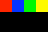

NSColor redColor set.This is the Hello World of Pixel Scripting. You're going to learn how to draw squares that react to the music by bouncing up and down the screen.
Let's start by modifying one of the sample scripts that come with the Pixel Pusher. Open
square.pixelscript in any source code editor.
While you're editing a script it's helpful to see the effects of your changes. Find the square.pixelscript animation in the animation list and select it so that you can see the four squares animating to the music.
We're going to start from scratch and rebuild this example, so delete everything in this file and then hit save. Your animation should now be a black box.
Before we can draw a box we need to change the current painting color. By default it's black, let's change it to red.
There are two painting colors that can be set that will affect all subsequent drawing: fill and stroke. To set one or the other you may use the methods
setFillorsetStroke, respectively. If you would like to set both then you can callsetas we do in this example.
NSColor redColor set.Now that we've set a painting color we can draw a rectangle on the screen. We use the renderer
object to do things like draw rectangles and circles to the screen. In this case we're filling a
rectangle that's 20 pixels wide by 10 pixels tall.
(renderer fillRect:(0<>0 extent:20<>10)).Here's what each of the numbers in the previous line of code mean.
(renderer fillRect:(x<>y extent:width<>height)).At this point your animation should look like this:
NSColor redColor set.
(renderer fillRect:(0<>0 extent:20<>10)).Reacting to music is simple thanks to degraders. A degrader works like those little bars on old amplifier displays that got pushed up and then slowly fell back down as the music was playing.
In our case we have four degraders: one each for bass, hi hats, vocals, and snares. The value of these degraders is a floating point number from 0...1 that represents the amplitude of the respective instrument. The degraders' values fall back to zero at a velocity of one unit per second.
bassDegrader value
hihatDegrader value
vocalDegrader value
snareDegrader valueFor example, if the bass hits then the bass degrader value will be 1 and then fall back to 0 over the course of one second.
To make our box bounce it's a simple matter of using one of the degraders to modify the y position of the box.
(renderer fillRect:(0<>(bassDegrader value * 20) extent:20<>10)).Drawing more boxes is as easy as adding more fillRect calls to your pixelscript.
NSColor blueColor set.
(renderer fillRect:(20<>(hihatDegrader value * 20) extent:20<>10)).Let's add the last two boxes for the last two degraders. To fit them all we'll need to shrink our
existing boxes a bit. Thankfully there's a variable that we can use to easily calculate how big
the boxes should be: kWallWidth.

boxWidth := kWallWidth / 4.
xOffset := 0.
NSColor redColor set.
yOffset := bassDegrader value * 20.
(renderer fillRect:(xOffset<>yOffset extent:boxWidth<>boxWidth)).
xOffset := xOffset + boxWidth.
NSColor blueColor set.
yOffset := hihatDegrader value * 20.
(renderer fillRect:(xOffset<>yOffset extent:boxWidth<>boxWidth)).
xOffset := xOffset + boxWidth.
NSColor greenColor set.
yOffset := vocalDegrader value * 20.
(renderer fillRect:(xOffset<>yOffset extent:boxWidth<>boxWidth)).
xOffset := xOffset + boxWidth.
NSColor yellowColor set.
yOffset := snareDegrader value * 20.
(renderer fillRect:(xOffset<>yOffset extent:boxWidth<>boxWidth)).
xOffset := xOffset + boxWidth.